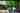

Blur-up 이미지 로딩 데모
크롬 개발자 도구 (F12) → Network 탭 → Throttling을 "Slow 4G"로 설정하면 효과를 더 잘 볼 수 있습니다.
단계별 비교 (스크린샷용)
1단계: 흐릿한 프리뷰

1KB 정도의 작은 이미지를 blur(10px) 필터로 표시
2단계: 로딩 중 (전환 50%)

고해상도 이미지가 페이드 인 중
3단계: 로드 완료
선명한 이미지 표시, 프리뷰는 숨김
실제 동작 데모
아래 버튼을 클릭하면 실제 Blur-up 효과를 확인할 수 있습니다.
Network throttling을 "Slow 4G"로 설정하면 효과가 더 명확합니다.
이미지 로딩 대기 중...
구현 방법
HTML 구조 보기
<div class="image-container">
<!-- 흐릿한 프리뷰 -->
<img class="image-placeholder"
src="placeholder-small.jpg"
alt="" aria-hidden="true" />
<!-- 실제 이미지 -->
<img class="image-full"
src="demo-image.jpg"
alt="데모 이미지" />
</div>CSS 스타일 보기
.image-container {
position: relative;
width: 100%;
overflow: hidden;
}
.image-placeholder {
position: absolute;
width: 100%;
height: 100%;
object-fit: cover;
filter: blur(10px);
transform: scale(1.1);
z-index: 1;
}
.image-full {
width: 100%;
opacity: 0;
transition: opacity 0.4s ease-in;
z-index: 2;
}
.image-full.loaded {
opacity: 1;
}JavaScript 코드 보기
const fullImage = document.querySelector('.image-full')
fullImage.addEventListener('load', () => {
fullImage.classList.add('loaded')
})
// 이미 캐시된 경우
if (fullImage.complete) {
fullImage.classList.add('loaded')
}